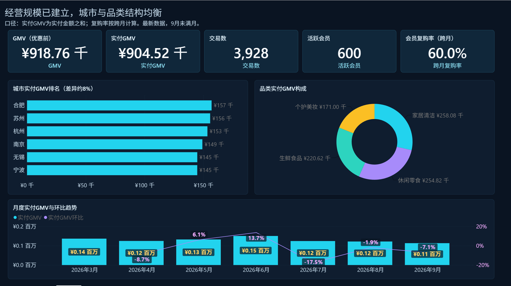
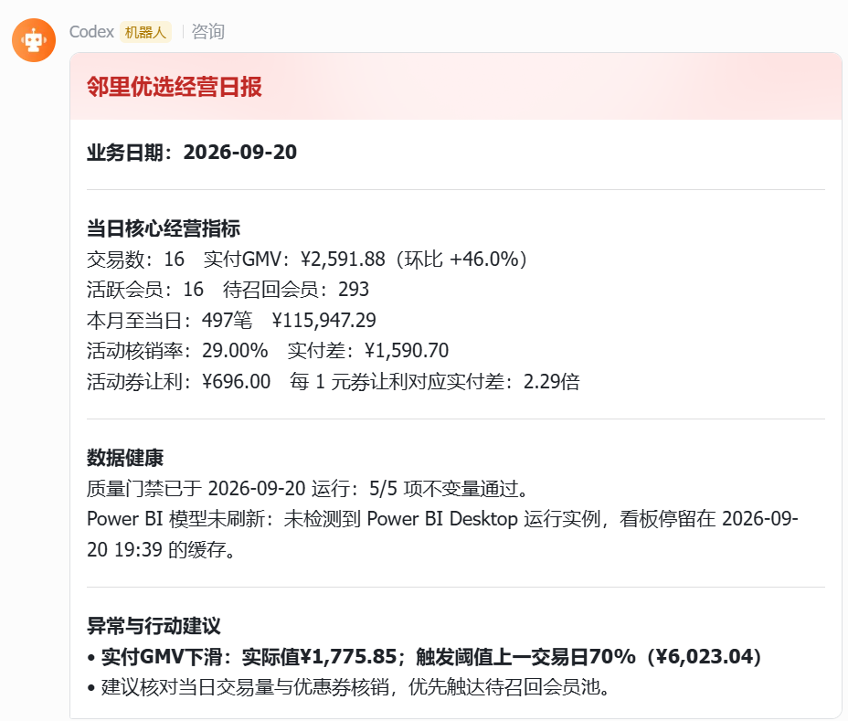
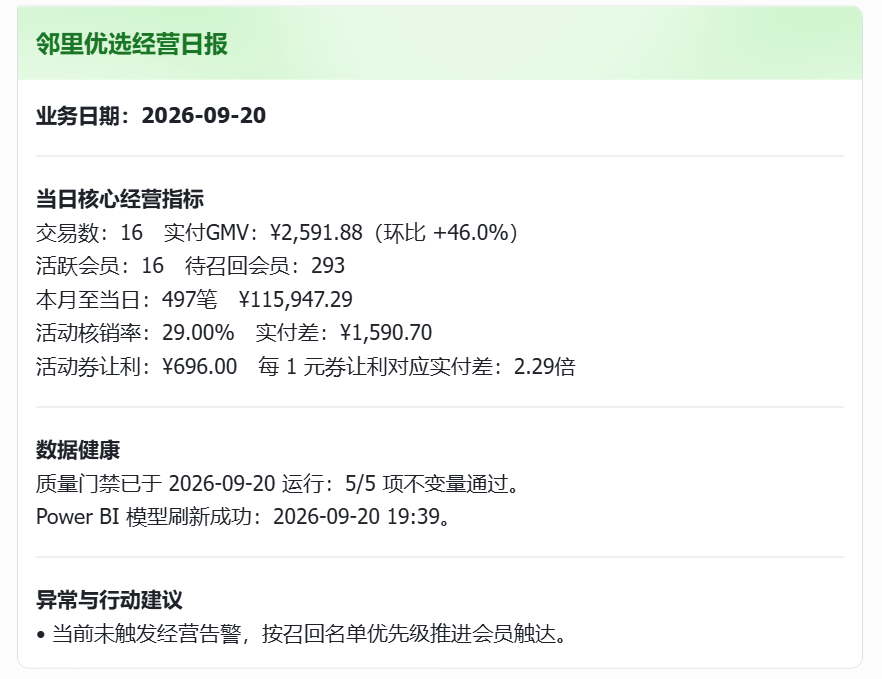

01 / 经营判断
经营总览
集中查看GMV、实付、交易、活跃会员、复购率，以及城市和品类结构，快速判断经营盘面。
先回答“现在怎么样”邻里优选是一套面向社区零售场景的会员经营分析作品集：从经营总览，到识别沉默会员、分配召回动作，再到评估营销活动，最后通过日报和飞书推送把结论交到业务手里。

页面不强调工具堆叠而是展示每项功能如何支持一个具体的经营决策
集中查看GMV、实付、交易、活跃会员、复购率，以及城市和品类结构，快速判断经营盘面。
先回答“现在怎么样”按会员价值、活跃与风险识别沉默会员，给出高风险优先级和可执行的召回动作。
再回答“该找谁”用实验组/对照组比较核销率、实付差、券让利和预算执行，帮助业务判断活动是否值得继续。
判断“做了有没有用”把核心指标、异常提醒和行动建议整理成日报卡片，直接推送到业务沟通场景。
最后回答“下一步做什么”从发现问题到执行动作每个页面都对应业务流程中的一个关键节点
经营总览确认收入、交易与会员状态。
分层和风险模型筛出需要召回的会员。
活动页对比实验和对照，拆开收入与成本。
日报、预警和行动建议交给运营团队。
点击左侧模块查看对应页面。图片用于展示功能和信息层级，不作为数据对齐验收证据。
把经营规模、城市结构、品类结构和月度趋势放在同一张图里，帮助管理者先建立全局判断。
日报不是另一个孤立报表，而是把指标、异常和下一步动作压缩成可直接阅读的业务消息。


数据来源：使用网络公开数据思路与虚拟平台场景合成，用于展示完整业务功能，不强调真实业务数字对齐。
实现方式：PostgreSQL + dbt + Power BI + Python日报与飞书机器人，形成从数据整理、看板分析到运营触达的完整链路。
保留业务闭环，替换输入、规则和输出，就能迁移到新的经营场景。
可从表格、关系型数据库、数据仓库或业务 API 接入交易、会员、商品、活动等数据。
可以增加、删除或重定义 KPI，把“收入与复购”换成留存、客单价、毛利、线索转化等指标。
支持阈值、环比、同比、目标差距、异常波动、数据质量等触发方式，并按人群或业务线细分。
同一结论可以输出为看板、日报卡片、邮件摘要、Excel 清单或管理层周报，匹配不同团队的工作习惯。